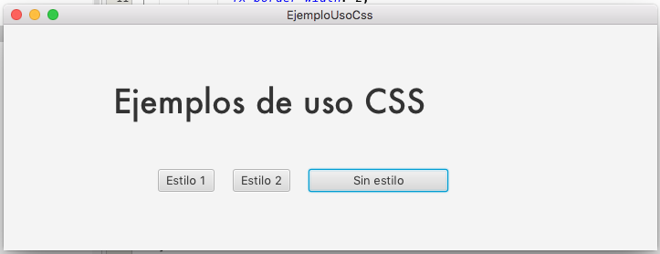

JavaFX permite la personalización de los elementos graficos de una aplicación Java usando CSS. Veremos cómo se pueden usar archivos de hojas de estilo CSS, aunque también es posible aplicar los estilos directamente desde el código fuente a cada elemento de pantalla.
Lista de estilos de la escena
La escena (Scene) que se utilice en una aplicación JavaFX ofrece la posibilidad de asignarle una serie de hojas de estilos a través de una lista. A dicha lista se le podría añadir una única hoja de estilos, varias o dejarla vacía.
Para acceder a dicha lista de hojas de estilos se puede utilizar el método getStylesheets() de la clase Scene:
scene.getStylesheets()Para añadir una hoja de estilos a la lista se puede usar el método add() como es habitual en las listas de Java, indicando en este caso el nombre del archivo que contiene los estilos:
scene.getStylesheets().add("nombreHojaEstilos.css")Hay que tener en cuenta que si no se indica ninguna ruta junto al nombre del archivo, éste debe colocarse en la carpeta src del proyecto.
Hoja de estilos dentro de paquetes
Lo habitual y recomendable es tener los archivos mejor organizados, por lo que conviene alojar los archivos CSS en un paquete propio. Por ejemplo, se puede crear un paquete (o carpeta) llamada view dentro de los paquetes de fuentes, con idea de alojar diversos recursos de la aplicación como imágenes, sonidos, o los estilos. Incluso dentro de ese paquete se pueden organizar los recursos por categorías, por lo que se puede crear dentro de él otro paquete que se llame, por ejemplo, css donde se alojarán las hojas de estilo. Observa que en la pestaña projects de netbeans el árbol del proyecto aparece como un único paquete llamado view.css, aunque realmente se trata de una carpeta dentro de otra. Se vería como algo así en :

Mientras que en la pestaña Files de NetBeans se vería la estructura real en carpetas:
Así que para que la aplicación cargue una hoja de estilos ubicada en un paquete dentro de los paquetes de fuentes, debes indicar el nombre del archivo precedido de la ruta de acceso:
scene.getStylesheets().add("view/css/estilo1.css");Hoja de estilos en paquete dentro del paquete principal
Otra posible manera de organizar este tipo de archivos (y otros tipos de archivos de recursos) es alojándolos en paquetes dentro del paquete de la clase principal del proyecto. Por ejemplo creando los paquetes resources y css.
Aunque aparece como un paquete independiente, realmente es una carpeta dentro de la que contiene la clase Main.java. Este tipo de estructura de paquetes se visualiza mejor si cambias el modo de vista de los paquetes Java como árbol reducido.
En estos casos, en lugar de indicar la ruta completa del archivo, conviene indicar la ruta relativa desde la carpeta donde se encuentre la clase Java que va a hacer referencia al archivo CSS. Esto debe hacerse utilizando el método getClass().getResource().toExternalForm() de la siguiente manera:
scene.getStylesheets().add(getClass().getResource("resources/css/estilo1.css").toExternalForm());Vaciar la lista de estilos
La escena de la aplicación puede tener varias hojas de estilos asociadas si se van añadiendo a la lista más de una hoja.
Si en un momento determinado deseas vaciar completamente la lista de hojas de estilos (para dejar de nuevo los estilos predefinidos) puedes utilizar el método clear() que se encuentra disponible como en otros tipos de listas en Java.
scene.getStylesheets().clear();Definir hoja de estilos
Dentro de las hojas de estilos encontraremos tres elementos: clases, identificadores y pseudo-clases. Las clases se reconocen con un .nombre-de-clase y afectan a todos los elementos de esa misma clase.
Clases o selectores
En java fx las clases coinciden con los nombres de los elementos, y en el caso de tener dos palabras se separarán por un guión medio. Así, si se quiere que todos los elementos de tupo button tengan el mismo aspecto se define su clase con las propiedades determinadas. Lo mismo pasaría con el resto de elementos
.root{
}
.button{
}
.label{
}
.radio-button{
}Existe una clase especial que recibe el nombre de root, la cual afecta a toda la escena completa. Una vez se han definido las clases se definirán las propiedades que se quieren configurar para cada una de los elementos. Hay que tener en cuenta que todas las propiedades empiezan con -fx seguido del nombre de la propiedad
.root{
-fx-font-size: 16px;
-fx-font-family: "Verdana";
-fx-base: mintcream;
-fx-background: whitesmoke;
}
.button{
-fx-text-fill: BLACK;
-fx-alignment: center;
-fx-background-color: gainsboro;
}
.label{
-fx-text-fill: green;
-fx-font-family: "Arial";
-fx-font-size: 20pt;
}De esta forma toda escena tendrá las propiedades que marca la clase .root, los botones tendrán las propiedades de la clase .button y las etiquetas tendrán las propiedades de la clase .label. en este último elemento se puede ver como la propiedad -fx-font-size queda sobrescrita de la otorgada por la clase .root
Pseudo-clases
Son elementos muy parecidos a las clases, con la diferencia que indican el comportamiento gráfico de los elementos en un momento concreto. Inicialmente existen las siguientes pseudo clases: disabled, focused, hover, pressed, show-mnemonic que definen los estados de deshabitado, con el foco seleccionado, seleccionado, presionado y mostrando la abreviatura respectivamente. Para poder indicar el comportamiento que tendrá una pseudo clase de un elemento concreto tan solo es necesario incluir :estado a la clase concreta
.button:pressed {
-fx-text-fill: WHITE;
-fx-background-color: gray;
}De esta forma cuando el botón sea presionado el texto tendrá un color de blanco y el fondo del botón pasará a ser gris
Elementos
En el caso de querer definir el comportamiento gráfico de un elemento concreto sin que le afecte el de su clase correspondiente se aplica un elemento. Para ello tan solo hay que crear un nuevo bloque con #nombrebloque en el archivo CSS y setear el id al elemento del nombre crea (no confundir con el fx-id). Para poder setear el id se puede realizar por código o bien mediante el archivo xml
#subtitulo{
-fx-font-size: 15pt;
-fx-font-style: italic;
-fx-text-fill: lightseagreen;
}De esta forma el elemento cuyo id sea subtitulo tendrá esa apariencia, sobre escribiendo las definidas en su clase correspondiente
Para poder asignar una hoja de estilos a una escena se ejecutan los métodos getSytlesheets().add() o mediante SceneBuilder.
scene.getStylesheets().add(getClass().getResource("recursos/css/stylecss.css").toExternalForm());
En el artículo JavaFX CSS Reference Guide puedes encontrar todas las propiedades y los posibles valores que se le puede asignar a cada propiedad.
Proyecto de ejemplo
El siguiente código corresponde a una aplicación con 3 botones que permiten modificar la apariencia de los mismos dependiendo del botón que se pulse. Es decir, como si se cambiara el "tema" de la aplicación.

La estructura del proyecto podría ser la siguiente:
Las hojas de estilo:
estilo_1.css
#titulo { -fx-font-family: "Hervetica";
-fx-font-style: italic;
-fx-font-size: 36px;
-fx-text-fill: #FFFFFF;
}
#fondo { -fx-background-color: #000000; }
Button { -fx-background-color: #008287;
-fx-border-color: #FFFFFF;
-fx-border-width: 2;
-fx-text-fill: #FFFFFF;
-fx-font-family: "Times New Roman";
-fx-font-style: italic;
-fx-font-size: 28px;
-fx-background-radius: 10 10 10 10;
-fx-border-radius: 10 10 10 10;
}
#autor { -fx-font-family: "Hervetica";
-fx-text-fill: #FFFF00;
-fx-font-size: 12px;
}
Button:hover { -fx-background-color: #333333;
-fx-font-size: 22px;
}
Button:pressed { -fx-background-color: #FFFFFF;
-fx-text-fill: #000000;
-fx-font-weight: bold;
}estilo_2.css
#titulo { -fx-font-family: "Berlin Sans FB";
-fx-font-style: italic;
-fx-font-size: 36px;
-fx-text-fill: #FFFFFF;
}
#fondo { -fx-background-color: #660099; }
Button { -fx-background-color: #02CF08;
-fx-border-color: #FFFFFF;
-fx-border-width: 2;
-fx-text-fill: #FFCC00;
-fx-font-family: "Comic Sans MS";
-fx-font-style: italic;
-fx-font-size: 18px;
-fx-background-radius: 10 10 10 10;
-fx-border-radius: 10 10 10 10;
}
#autor { -fx-font-family: "Berlin Sans FB";
-fx-text-fill: #0097D7;
-fx-font-size: 12px;
}
Button:hover { -fx-background-color: #333333;
-fx-font-size: 22px;
}
Button:pressed { -fx-background-color: #FFFFFF;
-fx-text-fill: #000000;
-fx-font-weight: bold;
}Nuestro FXML en Scene Builder:
Recordar:
- Asignar los id al AnchorPane y los botones (panel, btnEstilo1, btnEstilo2 y btnEstilo3)
- Cuando tengamos el Controlador, asociar el método correspondiente a los botones.
El fichero Controlador:
public class FXMLUsosCSSController implements Initializable {
@FXML private AnchorPane panel;
@FXML Button btnEstilo1;
@FXML Button btnEstilo2;
@FXML Button btnEstilo3;
/**
* Initializes the controller class.
*/
@Override
public void initialize(URL url, ResourceBundle rb) {
// TODO
}
@FXML
private void primerEstilo(ActionEvent event) {
panel.getStylesheets().clear();
panel.getStylesheets().add("/view/CSS/estilo_1.css");
}
@FXML
private void segundoEstilo(ActionEvent event) {
panel.getStylesheets().clear();
panel.getStylesheets().add("/view/CSS/estilo_2.css");
}
@FXML
private void tercerEstilo(ActionEvent event) {
panel.getStylesheets().clear();
}
}
Y el programa principal:
public class EjemploUsoCss extends Application{
@Override
public void start(Stage primaryStage) {
FXMLLoader fxml = new FXMLLoader(getClass().getResource("/view/FXMLUsosCSS.fxml"));
try {
AnchorPane root = fxml.<AnchorPane>load();
Scene scene = new Scene(root);
primaryStage.setScene(scene);
primaryStage.setTitle(getClass().getSimpleName());
primaryStage.show();
} catch (IOException e) {
System.out.println("Error al cargar el fxml.");
e.printStackTrace();
}
}
public static void main(String[] args) {
launch(args);
}
}